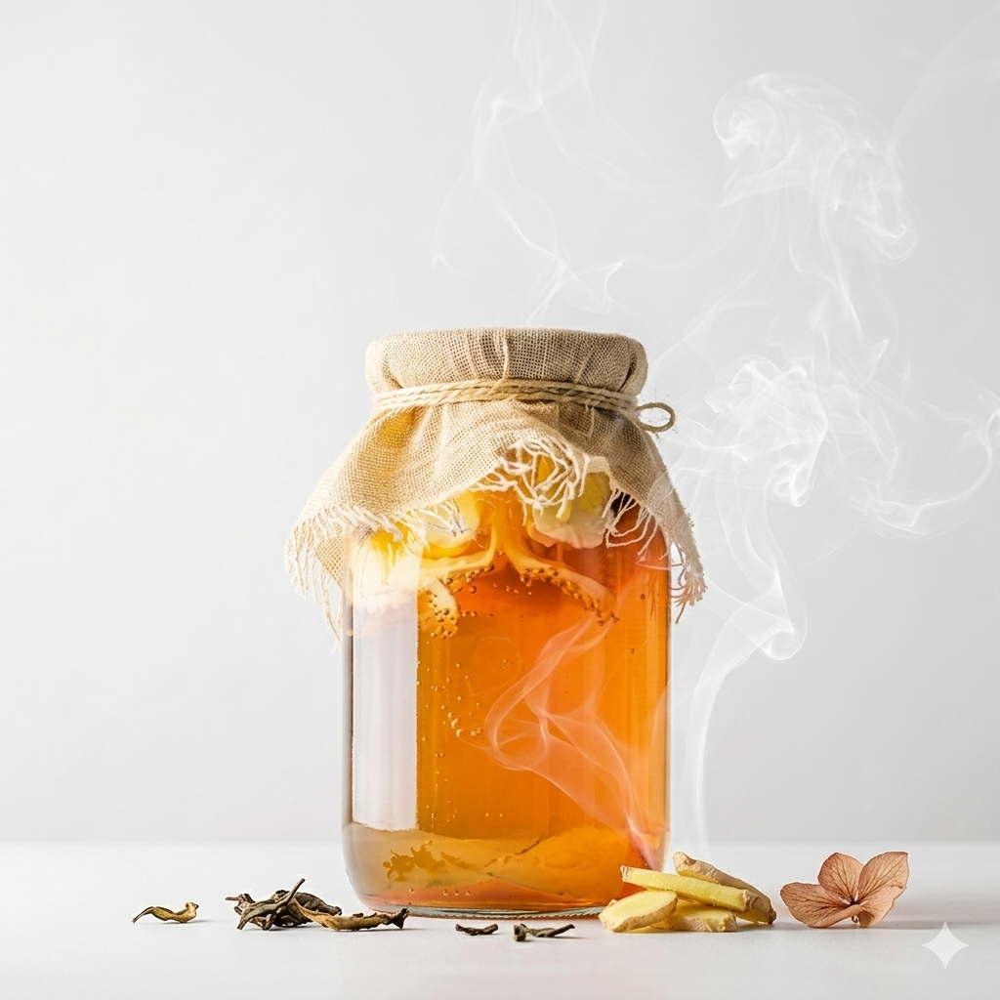

Selamat datang! Halaman ini berisi penjelasan mengenai bioteknologi kombucha, yaitu proses fermentasi teh manis yang melibatkan mikroorganisme seperti bakteri dan ragi. Melalui website ini, kamu dapat mempelajari pengertian kombucha, proses pembuatannya, serta peran mikroorganisme dalam menghasilkan minuman fermentasi yang bermanfaat.
Learn more
Kombucha merupakan sebuah produk minuman berbahan dasar teh dan gula yang menggunakan bioteknologi konvensional untuk membuatnya, lebih tepatnya melalui proses alami fermentasi. Proses fermentasi yang harus dilewati kombucha dilakukan oleh sebuah kultur mikroorganisme, yang disebut SCOBY. SCOBY, yang bisa disebut juga Symbiotic Culture Of Bacteria and Yeast, merupakan kultur simbiosis yang mengandung bakteri dan ragi yang bekerja untuk mengubah gula menjadi alkohol dan asam asetat. Meskipun proses fermentasi kombucha menggunakan mikroorganisme, kombucha tetap aman untuk diminum karena pertumbuhan bakteri yang intensif mencegah pertumbuhan bakteri lainnya.
Proses fermentasi kombucha umumnya dilakukan menggunakan teh hijau atau teh hitam. Teh hitam umumnya memberikan rasa yang lebih kuat, sedangkan teh hijau umumnya memberikan rasa yang lebih ringan. Kombucha juga dikenal sebagai minuman pendukung kesehatan, karena kombucha memiliki banyak manfaat bagi kesehatan tubuh manusia. Manfaat manfaat yang dapat diperolah dari meminum kombucha antara lain: melancarkan pencernaan, memperkuat imun tubuh, menyehatkan hati dan jantung. Kombucha juga mengandung banyak vitamin yang bermanfaat, seperti vitamin B1, B2, B3, B6, B12, B15, dan C.
Nama : Shilo T
Kelas : IX
Absen : 24
shilo.tan
smp.stangela.bandung
085117660918